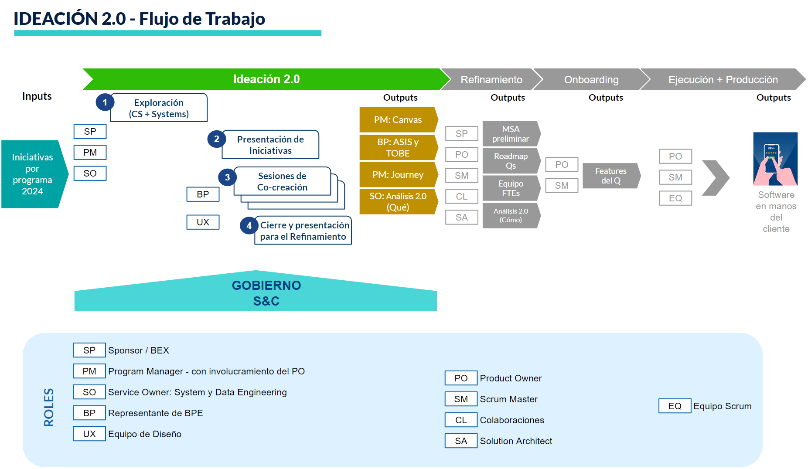

1ra Sincronización de SMs
Chayanne Huaranca
23/09/2024La idea principal consiste en presentar los distintos puntos de dolor asociados a la etapa de REFINAMIENTO y a su vez mostrar posibles alternativas de solución para nuestra Factoría en el BBVA.
Puntos de dolor expuestos

- Un SM puede llegar a refinar varios proyectos a la vez.
- La necesidad plasmada en el canvas no está bien definida y/o aterrizada
- La fecha de los refinamientos siempre se dan en los últimos sprints
- El proceso de onboarding quita tiempo y las perspectivas suelen ser distintas
- Negocio siempre solicita reducir FTEs
Propuestas y/o iniciativas
Metodología Peer Teaching o Aprendizaje entre pares
Consiste en juntar a dos personas con conocimientos distintos, en el cual uno puede ser más experto que el otro y la idea principal es compartir todo el conocimeinto posible.
Enseñar a otros refuerza el aprendizaje propio...

Ideación 2.0
 Ideación - Flujo de TrabajoIdeación 2.0
Puntos a Considerar
- Documentos de salida: Canvas, ASIS y TOBE, Journey y Nivel 1 del Documento de análisis 2.0
- Este proceso se debería de formalizar y los documentos mencionados en el punto anterior deberían de ser obligatorios
- Debería de existir un filtro el cual podría ser llevado por el SO y posterior a ello distribuirlo con los APP Owners o SMs